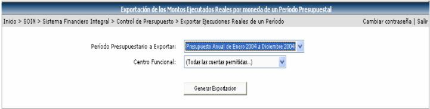
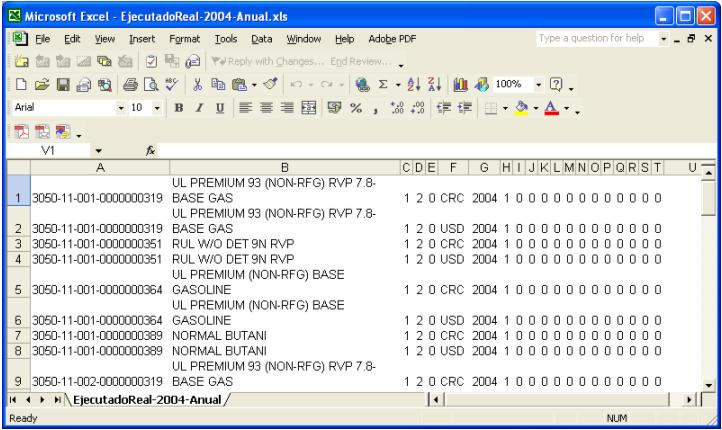

En esta opción se exporta
la información del presupuesto del periodo y centro funcional que el usuario
seleccione en la siguiente pantalla. Luego debe de presionar el botón
 , para generar el archivo con la información:
, para generar el archivo con la información:

Genera un archivo en Excel con la información del presupuesto, con las cuentas, la moneda, el año, los meses y los montos ejecutados, etc. La información que se genera muestra todos los meses del periodo, los que parecen con monto son los meses anteriores al actual por lo cual ya son los ejecutados y los que aparecen en cero son los meses posteriores al mes actual, por lo que no se ha ejecutado ningún monto hasta el momento:
